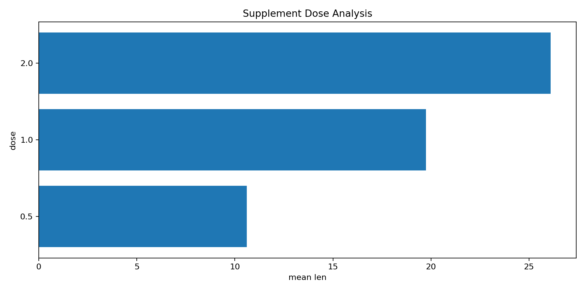

How does tooth length differ by supplement dose?
The largest observed mean len is 26.100 for 2.0. This ranking is descriptive, not a recommendation.

| segment | rows_used | metric | minimum | maximum |
|---|---|---|---|---|
| 0.5 | 20 | 10.605 | 4.2 | 21.5 |
| 1.0 | 20 | 19.735 | 13.6 | 27.3 |
| 2.0 | 20 | 26.100 | 18.5 | 33.9 |
Guinea-pig experiment; findings are not human medical advice.
Inspect supplement-specific dose patterns and experimental design.